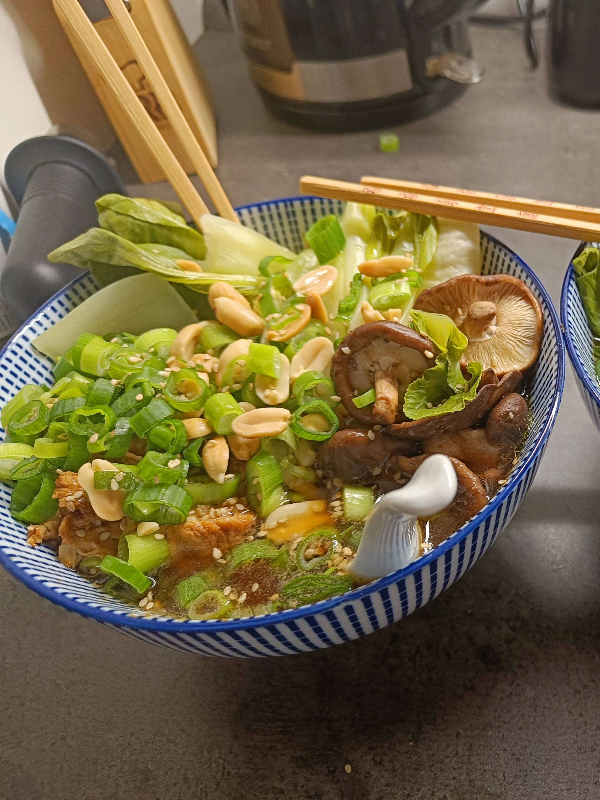

Home
Shoyu Udon Broth

© Photo taken by me (Dario Blaszczyk)
This Shoyu Udon Broth warms your heart
A
shoyu udon broth with shiitake mushrooms, glazed chicken, pak choi, and spring onions where simple preparation meets complex flavors.
I adapted this broth with udon noodles from a ramen recipe. It has an incredibly intense flavor,
offers plenty of variety, and is very filling. It's especially enjoyable on colder evenings and easy to prepare.
Not only is it warming and healthy, it also looks beautiful. Your guests will be delighted!